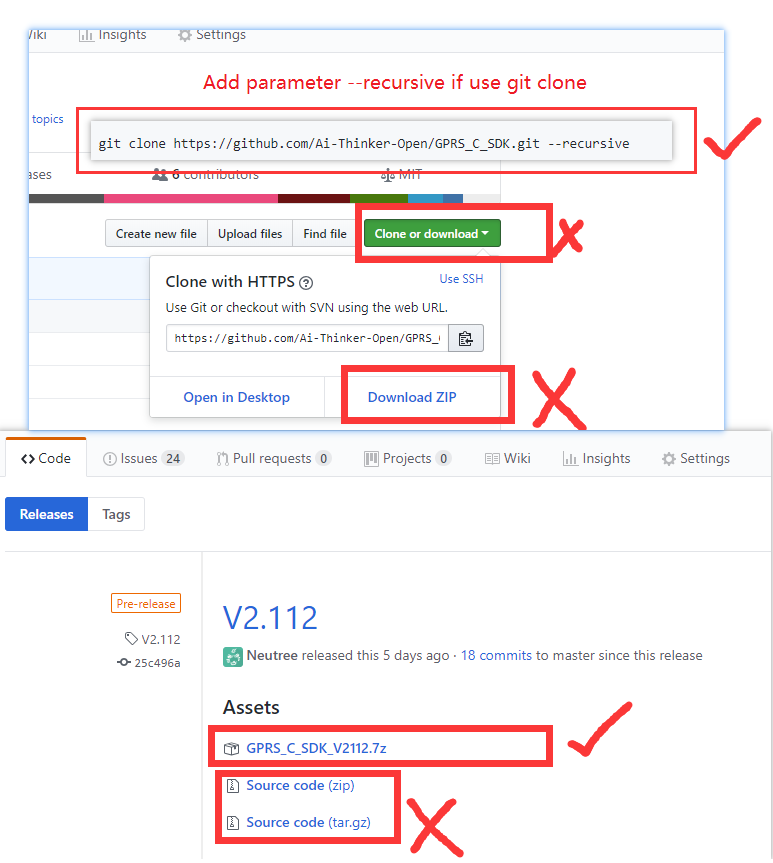

GPRS C SDK Build environment installation on Linux
1. Pay Attention
important, please read first
SDK does not have a specific IDE, and the user chooses the code editor to edit the code.(Like vscode, sublime, atom, eclipse, source insight, or other editors you are familiar with. )
Please modify the editor settings. The end of the file symbol is set to UNIX style (
<LF>(\n) end), and file encoding isUTF-8if you are cloned using git, set the git at pull not to convert
<LF>to<CR><LF>, set the method reference here
2. Download tool chain, debug tool and SDK
Download CSDTK4.2 Linux version:
Get SDK
- download SDK
- or clone by git:
git clone https://github.com/Ai-Thinker-Open/GPRS_C_SDK.git --recursive(pay attention--recursiveis needed, or compile will fail for lake of files) - Check C_SDK
platform/csdkfolder, there should be some folders and file, if not, you may get source code with wrong way, check and download again 
3. Installation
3.1. Install dependences for compile tool
sudo apt install build-essential gcc-multilib g++-multilib libzip-dev zlib1g lib32z1
3.2. Install dependences for coolwatcher
sudo apt install build-essential libqt4-qt3support itcl3 itk3 iwidgets4
and maybe other compatible libs in ther latest ubuntu
sudo apt install libpng12-0 libusb-0.1-4
3.3. CSDTK set up
- Create a project folder e.g.
~/projects
mkdir ~/projects
- Decompress
CSDTK42_Linux.tar.gzto a folder,~/software/CSDTKfor example, and then executesetup.sh, the first parameter is the location of CSDTK, the second parameter is the location of your projects
cd ~/software
tar -xzvf CSDTK42_Linux.tar.gz
cd CSDTK
./setup.sh ./ ~/projects
3.4. Compile
Decompress the CSDK downloaded to
GPRS_C_SDKfolder into a directory, such as~/projects/GPRS_C_SDK, use the underscore(_) instead of minus(-).Check if the SDK have full files, check
platform/csdkfolder, if nodebugandreleasefolders, you download the wrong SDK file, please download again in release page or clone by commandgit clone https://github.com/Ai-Thinker-Open/GPRS_C_SDK.git --recursivecompile
cd ~/projects/GPRS_C_SDK
./build.sh demo gpio
if you put you GPRS project in the projects folder(you set by command ./setup.sh ./ ~/projects before), you can use a script to go to the project folder quikly as follow
work GPRS_C_SDK
./build.sh demo gpio
Then you can use ./build.sh script to build project:
./build.sh $PROJ:compile app module，e.g.:./build.sh appto compile the source code of app folder./build.sh demo $PROJ:compile demo project, e.g.:./build.sh demo gpioto compile gpio demo./build.sh clean $PROJ:clear the build files of$PROJ./build.sh clean all:clear all the build files./build.sh demo $PROJ release:build a release version, e.g.:./build.sh demo gpio release，if the last parameter is notrelease, it will be default todebugversion. The GDB can be used to debug errors after system crashed indebugversion, butreleaseversion can not, watch dog activate in release version,it will auto restart system when system crashed!
e.g.:
./build.sh demo gpio
A build folder will be generated after compile, there's two *.lod files in th hex folder, it's the target file that burn(download) to dev board
- about target hex file(*.lod)
There's two hex file,(*_B*.lod and *_flash.lod), you must burn the bigger one to dev board at the first time, then you can just burn the little one to reduce the doanload time. And you must download the bigger if you update the SDK version
4. Other Problems
If error occured, please compare the documents carefully to see if the operation is wrong，and find in issue
Way A: github add issue
Way B: Ai-Thinker forum